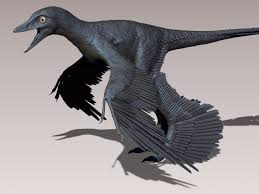

Extra Fun Facts
Did you know that a microraptor only grew to the size of a crow making it one of the smallest dinosaures. The name microraptor means "small theif" in greek. It is believed to have bird like feathers and claws.
This bird like creature would have feed on mostly small lizzards,birds,and fish. There is also evidence of this small bird eating other mammals. They lived in modern day hina and would have been able to glide like a flying squirel. The microraptor had wings on all 4 limbs. It was also the first to be found with asymmetrical feathers.Scientist believe that this was a way for the dino to regulate his tempture.